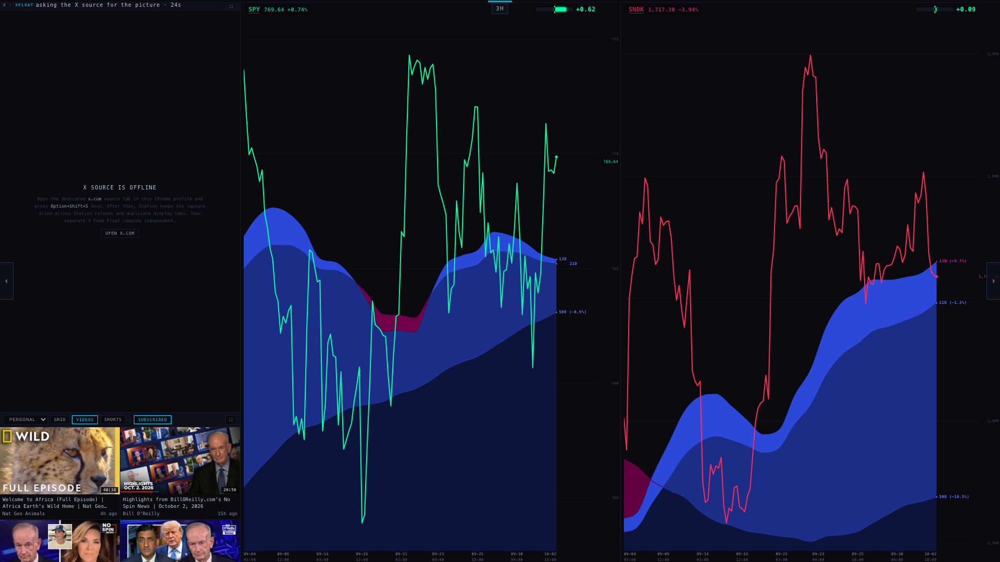
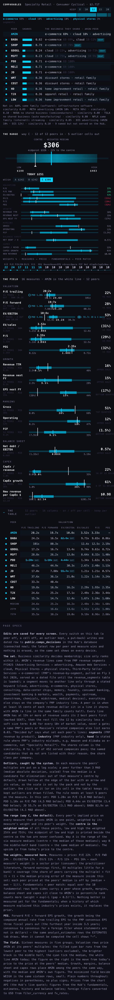
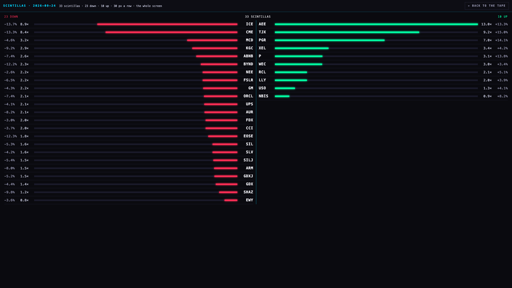

Saturday review · 3 Oct
1Station floor plan LIVE NOW
You approved it; it went live at 12:30 ET and the live page was checked against the code. X column 24% of the screen, charts 76%, YouTube at the foot of X, no black. The video's expand button now puts the video big over the charts (BACK or Esc returns), and the YouTube buttons fit.

2Hub consistency YOUR OK
ALLOCATION / STATION / TREE centred, no underline · the chart buttons look like your GEIGER / FUNDAMENTALS tabs · chart and tabs about half and half · descriptions moved to a closed PAGE SPECS line · one panel colour, one size per kind of text.


3Analysts tab YOUR OK
The current price target is on top and big; the firms swipe left to right with dates; sub-tabs instead of one long scroll.
Why it was wrong before: our list of analyst targets is collected from a feed of analyst headlines. That feed had also tagged ordinary news stories with a firm and a price — e.g. an FTC story about Amazon was filed as "UBS, $200". 3,431 such rows are now set aside (not deleted). Amazon's consensus: low $200 → $300, mean $326.83 → $330.77.

4Comps YOUR OK
Peers are chosen by business first, size only as a weight. Amazon's peers now: BABA, SHOP, PDD, MELI, JD, Google, Microsoft, Walmart, Costco, Home Depot, TJX, Lowe's. Outliers (like ARM's 317× P/E) are caught, kept off the scale, one click to keep. The price uses the whole field with the weights shown.
Currencies fixed: Chinese and other foreign companies report in their own money while trading in dollars here; the comps were mixing the two. PDD's P/E 1.2× → 8.3× (FMP says 7.6×); BABA's EV/EBITDA 87× → 15.1×; JD's 57× → 8.9×. 16 foreign reporters checked against FMP.
One thing I want to discuss before you rely on it: Micron's comps say $4,479 against a $1,069 price, because its current peers are chip designers trading at 30–50× earnings while Micron earns a lot and trades near 10×. Its real peers are the memory makers (SanDisk, Western Digital, SK Hynix…) — the method still needs that.

5The coil on its own, in 3D PICK ONE
Second version: made of light (glass, beams, glow), every name upright, filling the screen. Three looks to switch between — LASER, LIGHT-GUIDE, HOLOGRAM. Turn it with the mouse; double-click goes home. Still to improve: labels crowd each other in the dense part.

6Scintillas — the zoom level YOUR OK
Tap the tape → it opens full screen: downs on the left, ups on the right of a centre line, every name, "× its usual day" and the move, one shared scale. BACK or Esc returns. (The tape tab of the lab page has it working.)

7The tree, part by part MARK THE SHEET
Every part of the tree on its own, smallest first (Geiger bar, label, cell, table, colours, proportions; then cohort as table / coil / step, podium, MY LISTS, HUD; then levels, navigation, every mode side by side — including exactly what CLEAN shows that DETAILED doesn't). Each has today's version and up to two alternatives, and a decision sheet for you.
Why it's hard to see today: on first view only 127 of 613 tickers print and 81% of the canvas is black — the boxes are drawn bigger than the space between them, so they cover each other.
Your cohorts, measured: of the Hub's 17 tabs, 9 are statistically sound; 39 candidate cohorts found, 8 sound today. The close Geiger already knows 5,642 names; 5,029 of them aren't on the tree yet.
Open the parts gallery → Open the decision sheet →8The back end — what was really happening YOUR OK
Found in the stored records: on Wed 30 Sep, Thu 1 Oct and Fri 2 Oct, from midnight to about 4:30 PM, the Geiger on the Hub was frozen at the previous evening's reading — up to 16½ hours old, with no age shown. Earlier days in September froze for other reasons too.
Your rule from today — "a little wrong rather than a little old" — is being built now: the Geiger publishes every cycle no matter what; a name that fails keeps its last value with its age; a chart never goes blank when we hold its bars. Built, tested and shown before it goes live.
The second opinion works: all 590 of Friday's closes matched Massive's whole-market file exactly.
Jobs that were silently failing (found by checking all 150 timers and machines): the X collector on the MacBook has been dead since 28 Sep (its folder was deleted) while the sentiment job kept reporting success; the nightly backup repair has failed all 14 nights; two Hub engines (stats every 30 min, ribbon every 3 min) reach their target only 6–35% of the time because ~20 timers fire at the same minute; the news-sentiment job errors most hours; an old alert writer holds 9,352 alerts never delivered. Fixes are written, not run.
Told plainly: before your 11:00 rule, an early run put a job check-in table and its checker live at 10:48 — alarms off, it has sent nothing, it only writes its own tables. I recommend keeping it (it's what the alarms will use); say if you want it removed.
Open the rules audit → Open the jobs audit → Open the status page →9Admission audit IN PROGRESS
Of 226 names admitted since 27 Sep: Geiger, previous close and history are clean for all; holes: 7 chart sizes (2m, 45m, 8h, 2D, 3M, 6M, 12M) never refreshed for any name; 70 companies without statements; the funds without profiles/news; MOG.A misnamed. Your bookmark names are complete apart from the shared chart sizes; CLSK, SIVE, TMRC never got in. A full check of every name on every Hub tab (incl. READ, earnings calendar, news) is running now, and it fills the gaps.
SK Hynix (SKHY): our admission robot asks for 60 trading days of history (SKHY has 59) because one name short of history could freeze everyone's Geiger. Once the "never freeze" change is live, SKHY goes in with the full treatment — this weekend.
Open the admission audit →10Running now
- Geiger never freezes ("a little wrong rather than a little old").
- The iMac board — rows slide when the order changes instead of jumping, nothing moves under your mouse while you scroll, a lighter ALL list; the chart's cut-off right edge; a "?" next to the company name that opens the business description; no developer text on screen.
- Full Hub treatment — every name × every tab, gaps filled, and a checklist every new ticker must pass.
- Market-wide bow tie — sector and cohort heat from the whole market, and which aggregates are statistically sound.
- Then what lives on the Hub — with the tree, cohorts and comps together, and one recommended number of Hub tickers. None of the 142 names leave.
Page specs
Sources: Station S11/S11b (station/s11-floorplan-build-20261003 @3277c3f, live 12:30 ET, deck/index.html live = git ff3048e7…); V1 hub/v1-design-standard-20261003 @34a709e; A3+A4 hub/a3-analysts-tab-20261003 @4ef8af2; C5+C5b hub/c5-comps-method-20261003 @cfba4b4; V2+V2b hub/v2-coil-lab-20261003 @a397054; T12 hub/t12-tree-parts-20261003 @1a39b2d; Q2a provider/q2a-rules-audit-20261003 @ae2b466 + report @b383053; Q2b provider/q2b-keepalives-20261003 @fb7676b + hub @08af2b4; U4b @9b4361e / @b90337d. These report pages are copied onto the Hub's review area only; no Hub screen, table or job changed with them.